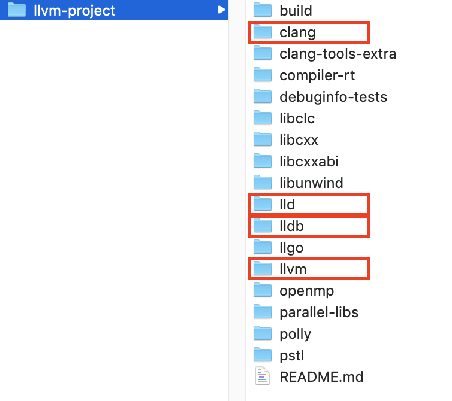
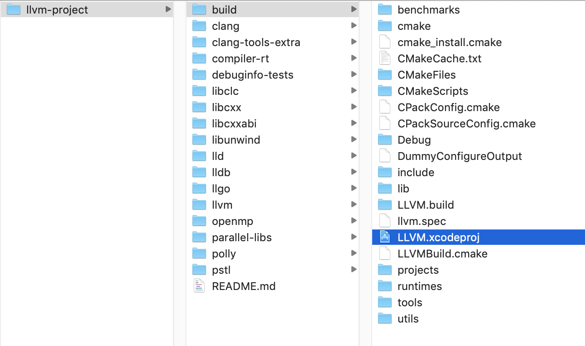

- 00 开篇词 锚定一个点，然后在这个点上深耕.md.html
- 01 建立你自己的iOS开发知识体系.md.html
- 02 App 启动速度怎么做优化与监控？.md.html
- 03 Auto Layout 是怎么进行自动布局的，性能如何？.md.html
- 04 项目大了人员多了，架构怎么设计更合理？.md.html
- 05 链接器：符号是怎么绑定到地址上的？.md.html
- 06 App 如何通过注入动态库的方式实现极速编译调试？.md.html
- 07 Clang、Infer 和 OCLint ，我们应该使用谁来做静态分析？.md.html
- 08 如何利用 Clang 为 App 提质？.md.html
- 09 无侵入的埋点方案如何实现？.md.html
- 10 包大小：如何从资源和代码层面实现全方位瘦身？.md.html
- 11 热点问题答疑（一）：基础模块问题答疑.md.html
- 12 iOS 崩溃千奇百怪，如何全面监控？.md.html
- 13 如何利用 RunLoop 原理去监控卡顿？.md.html
- 14 临近 OOM，如何获取详细内存分配信息，分析内存问题？.md.html
- 15 日志监控：怎样获取 App 中的全量日志？.md.html
- 16 性能监控：衡量 App 质量的那把尺.md.html
- 17 远超你想象的多线程的那些坑.md.html
- 18 怎么减少 App 电量消耗？.md.html
- 19 热点问题答疑（二）：基础模块问题答疑.md.html
- 20 iOS开发的最佳学习路径是什么？.md.html
- 21 除了 Cocoa，iOS还可以用哪些 GUI 框架开发？.md.html
- 22 细说 iOS 响应式框架变迁，哪些思想可以为我所用？.md.html
- 23 如何构造酷炫的物理效果和过场动画效果？.md.html
- 24 A_B 测试：验证决策效果的利器.md.html
- 25 怎样构建底层的发布和订阅事件总线？.md.html
- 26 如何提高 JSON 解析的性能？.md.html
- 27 如何用 Flexbox 思路开发？跟自动布局比，Flexbox 好在哪？.md.html
- 28 怎么应对各种富文本表现需求？.md.html
- 29 如何在 iOS 中进行面向测试驱动开发和面向行为驱动开发？.md.html
- 30 如何制定一套适合自己团队的 iOS 编码规范？.md.html
- 31 iOS 开发学习资料和书单推荐.md.html
- 32 热点问题答疑（三）.md.html
- 33 iOS 系统内核 XNU：App 如何加载？.md.html
- 34 iOS 黑魔法 Runtime Method Swizzling 背后的原理.md.html
- 35 libffi：动态调用和定义 C 函数.md.html
- 36 iOS 是怎么管理内存的？.md.html
- 37 如何编写 Clang 插件？.md.html
- 38 热点问题答疑（四）.md.html
- 39 打通前端与原生的桥梁：JavaScriptCore 能干哪些事情？.md.html
- 40 React Native、Flutter 等，这些跨端方案怎么选？.md.html
- 41 原生布局转到前端布局，开发思路有哪些转变？.md.html
- 42 iOS原生、大前端和Flutter分别是怎么渲染的？.md.html
- 43 剖析使 App 具有动态化和热更新能力的方案.md.html
- 用户故事 我是如何学习这个专栏的？.md.html
- 结束语 慢几步，深几度.md.html
- 捐赠
37 如何编写 Clang 插件？
你好，我是戴铭。今天，我和你分享的主题是，如何编写 Clang 插件。
Clang 使用的是模块化设计，可以将自身功能以库的方式来供上层应用来调用。比如，编码规范检查、IDE 中的语法高亮、语法检查等上层应用，都是使用 Clang 库的接口开发出来的。Clang 库对接上层应用有三个接口库，分别是 LibClang、Clang 插件、LibTooling。关于这三个接口库的介绍，我已经在第8篇文章中和你详细分享过。
其中，LibClang 为了兼容更多 Clang 版本，相比Clang少了很多功能；Clang 插件和 LibTooling 具备Clang 的全量能力。Clang 插件编写代码的方式，和 LibTooling 几乎一样，不同的是 Clang 插件还能够控制编译过程，可以加 warning，或者直接中断编译提示错误。另外，编写好的 LibTooling 还能够非常方便地转成 Clang 插件。
所以说，Clang 插件在功能上是最全的。今天这篇文章，我们就一起来看看怎样编写和运行 Clang 插件。
Clang 插件代码编写后进行编译的前置条件是编译 Clang。要想编译 Clang ，你就需要先安装 CMake 工具，来解决跨平台编译规范问题。
我们可以先通过 CMakeList.txt 文件，来定制CMake编译流程，再根据 CMakeList.txt 文件生成目标平台所需的编译文件。这个编译文件，在类UNIX平台就是 Makefile，在 Windows 平台就是 Visual Studio 工程，macOS 里还可以生成 Xcode 工程。所以，你可以使用熟悉的 Xcode 来编译 Clang。
接下来，我就和你说说怎么拉 Clang 的代码，以及编译 Clang 的过程是什么样的。
在 macOS 平台上编译 Clang
接下来的内容，我会以macOS 平台编译 Clang 为例。如果你想在其他平台编译，可以参看官方说明。
首先，从 GitHub 上拉下 Clang 的代码，命令如下：
git clone https://github.com/llvm/llvm-project.git
然后，执行以下命令，来创建构建所需要的目录：
cd llvm-project
mkdir build (in-tree build is not supported)
cd build
目录结构如下图：
- 其中，clang 目录就是类 C 语言编译器的代码目录；llvm 目录的代码包含两部分，一部分是对源码进行平台无关优化的优化器代码，另一部分是生成平台相关汇编代码的生成器代码；lldb 目录里是调试器的代码；lld 里是链接器代码。
macOS 属于类UNIX平台，因此既可以生成 Makefile 文件来编译，也可以生成 Xcode 工程来编译。生成 Makefile 文件，你可以使用如下命令：
cmake -DLLVM_ENABLE_PROJECTS=clang -G "Unix Makefiles" ../llvm
make
生成 Xcode 工程，你可以使用这个命令：
cmake -G Xcode -DLLVM_ENABLE_PROJECTS=clang ../llvm
执行完后，会在 build 目录下生成 Xcode 工程，路径如下图：
- 执行 cmake 命令时，你可能会遇到下面的提示：
-- The C compiler identification is unknown
-- The CXX compiler identification is unknown
CMake Error at CMakeLists.txt:39 (project):
No CMAKE_C_COMPILER could be found.
CMake Error at CMakeLists.txt:39 (project):
No CMAKE_CXX_COMPILER could be found.
这表示 cmake 没有找到代码编译器的命令行工具。这包括两种情况：
- 一是，如果你没有安装 Xcode Commandline Tools的话，可以执行如下命令安装：
xcode-select --install
- 二是，如果你已经安装了Xcode Commandline Tools的话，直接reset 即可，命令如下：
sudo xcode-select --reset
生成 Xcode 工程后，打开生成的 LLVM.xcodeproj文件，选择 Automatically Create Schemes。编译完后生成的库文件，就在 llvm-project/build/Debug/lib/ 目录下。
有了可以编写编译插件的 Xcode 工程，接下来你就可以着手编写 Clang 插件了。
准备编写 Clang 插件
编写之前，先在 llvm-project/clang/tools/ 目录下创建Clang 插件的目录，添加 YourPlugin.cpp 文件和 CMakeLists.txt 文件。其中，CMake 编译需要通过 CMakeLists.txt 文件来指导编译，cpp 是源文件。
接下来，我们可以使用如下代码编写 CMakeLists.txt 文件，来定制编译流程：
add_llvm_library(YourPlugin MODULE YourPlugin.cpp PLUGIN_TOOL clang)
这段代码是指，要将Clang 插件代码集成到 LLVM 的 Xcode 工程中，并作为一个模块进行编写调试。
想要更多地了解 CMake 的语法和功能，你可以查看官方文档。添加了 Clang 插件的目录和文件后，再次用 cmake 命令生成 Xcode 工程，里面就能够集成 YourPlugin.cpp 文件。
到这里，我们已经准备好了Clang 插件开发环境。接下来，我们就能够在Xcode编译器里开发Clang插件了。
编写 Clang 插件代码，入口就是 FrontActions。接下来，我们就一起看看FrontActions 是什么？
FrontAction 是什么？
FrontActions 是编写 Clang 插件的入口，也是一个接口，是基于ASTFrontendAction 的抽象基类。其实，FrontActions 并没干什么实际的事情，只是为接下来基于 AST 操作的函数提供了一个入口和工作环境。
通过这个接口，你可以编写你要在编译过程中自定义的操作，具体方式是：通过 ASTFrontendAction 在 AST 上自定义操作，重载 CreateASTConsumer 函数返回你自己的 Consumer，以获取 AST 上的 ASTConsumer 单元。
代码示例如下所示：
class FindNamedClassAction : public clang::ASTFrontendAction {
public:
// 实现 CreateASTConsumer 方法
virtual std::unique_ptr<clang::ASTConsumer> CreateASTConsumer(
clang::CompilerInstance &Compiler, llvm::StringRef InFile) {
// 返回 ASTConsumer 单元
return std::unique_ptr<clang::ASTConsumer>(
new FindNamedClassConsumer);
}
};
ASTConsumer 可以提供很多入口，是一个可以访问 AST 的抽象基类，可以重载 HandleTopLevelDecl() 和 HandleTranslationUnit() 两个函数，以接收访问 AST 时的回调。其中，HandleTopLevelDecl() 函数是在访问到全局变量、函数定义这样最上层声明时进行回调，HandleTranslationUnit() 函数会在接收每个节点访问时的回调。
下面有一个示例，会重载 HandleTranslationUnit() 函数，使用 ASTContext 为单元调用，通过 RecursiveASTVisitor 来遍历 decl 单元。具体代码如下：
class FindNamedClassConsumer : public clang::ASTConsumer {
public:
virtual void HandleTranslationUnit(clang::ASTContext &Context) {
// 通过 RecursiveASTVisitor 来遍历 decl 单元。会访问所有 AST 里的节点。
Visitor.TraverseDecl(Context.getTranslationUnitDecl());
}
private:
// 一个 RecursiveASTVisitor 的实现
FindNamedClassVisitor Visitor;
};
上面代码可以看出，接收 AST 节点回调的 TranslationUnitDecl 函数通过重载已经准备就绪，为接下来 RecursiveASTVisitor 访问 AST 节点做好准备工作。
RecursiveASTVisitor 使用深度优先的方式访问 AST 的所有节点。RecursiveASTVisitor 使用的是访问者模式，支持前序遍历和后序遍历来访问 AST 节点。RecursiveASTVisitor 会遍历 AST 的每个节点，遍历节点的同时会回溯，回溯节点类型的基类，再调用节点对应的 Visit 函数。如果重写了节点对应的 Visit 函数，就会调用重写后的 Visit 函数。可以看出真正在干活的是 RecursiveASTVistor，它基本完成了编写 Clang 插件里最多、最重的活儿。
接下来，我就跟你说说怎么用 RecursiveASTVisitor 来查找指定名称的 CXXRecordDecl 类型的 AST 节点。也就是说，你需要通过 RecursiveASTVisitor 实现从 AST 里面提取所需要内容。
CXXRecordDecl 类型，表示 C++ struct/union/class。更多的节点类型，你可以参看官方文档。
使用 RecursiveASTVisitor
RecursiveASTVisitor，可以为大多数的AST 节点提供布尔类型的 VisitNodeType(Nodetype *)。VisitNodeType 返回的布尔值可以控制 RecursiveASTVisitor 的访问，决定对 AST 节点的访问是否要继续下去。
下面，我们来重写一个访问所有 CXXRecordDecl 的 RecursiveASTVisitor。
class FindNamedClassVisitor
: public RecursiveASTVisitor<FindNamedClassVisitor> {
public:
bool VisitCXXRecordDecl(CXXRecordDecl *Declaration) {
// dump 出已经访问的 AST 的声明节点。
Declaration->dump();
// 返回 true 表示继续遍历 AST，false 表示停止遍历 AST。
return true;
}
};
在 RecursiveASTVisitor 的方法里，可以使用 Clang AST 的全部功能获取想要的内容。比如，通过重写 VisitCXXRecordDecl 函数，找到指定名称的所有类声明。示例代码如下：
bool VisitCXXRecordDecl(CXXRecordDecl *Declaration) {
if (Declaration->getQualifiedNameAsString() == "n::m::C")
Declaration->dump();
return true;
}
将代码保存成文件 FindClassDecls.cpp，并创建 CMakeLists.txt 文件来进行链接。CMakeLists.txt 的内容如下：
add_clang_executable(find-class-decls FindClassDecls.cpp)
target_link_libraries(find-class-decls clangTooling)
使用这个工具能够找到 n :: m :: C 的所有声明，然后输出如下信息：
$ ./bin/find-class-decls "namespace n { namespace m { class C {}; } }"
编写 PluginASTAction 代码
由于 Clang 插件是没有 main 函数的，入口是 PluginASTAction 的 ParseArgs 函数。所以，编写 Clang 插件还要实现ParseArgs来处理入口参数。代码如下所示：
bool ParseArgs(const CompilerInstance &CI,
const std::vector<std::string>& args) {
for (unsigned i = 0, e = args.size(); i != e; ++i) {
if (args[i] == "-some-arg") {
// 处理命令行参数
}
}
return true;
}
注册 Clang 插件
最后，还需要在 Clang 插件源码中编写注册代码。编译器会在编译过程中从动态库加载 Clang 插件。使用 FrontendPluginRegistry::Add<> 在库中注册插件。注册 Clang 插件的代码如下：
static FrontendPluginRegistry::Add<MyPlugin> X("my-plugin-name", "my plugin description");
在 Clang 插件代码的最下面，定义的 my-plugin-name 字符串是命令行字符串，供以后调用时使用，my plugin description 是对 Clang 插件的描述。
现在，我们已经编写完了 Clang 插件，我来和你汇总下编写过程：
第一步，编写 FrontAction 入口。
第二步，通过 RecursiveASTVisitor 访问所有 AST 节点，获取想要的内容。
第三步，编写 PluginASTAction 代码处理入口参数。
第四步，注册 Clang 插件，提供外部使用。
接下来，我们再看看如何使用编写好的Clang插件吧。
使用 Clang 插件
LLVM 官方有一个完整可用的 Clang 插件示例，可以帮我们打印出最上层函数的名字，你可以点击这个链接查看这个示例。
接下来，通过这个插件示例，看看如何使用 Clang 插件。
使用 Clang 插件可以通过 -load 命令行选项加载包含插件注册表的动态库，-load 命令行会加载已经注册了的所有 Clang 插件。使用 -plugin 选项选择要运行的 Clang 插件。Clang 插件的其他参数通过 -plugin-arg- 来传递。
cc1 进程类似一种预处理，这种预处理会发生在编译之前。cc1 和 Clang driver 是两个单独的实体，cc1 负责前端预处理，Clang driver则主要负责管理编译任务调度，每个编译任务都会接受 cc1 前端预处理的参数，然后进行调整。
有两个方法可以让 -load 和 -plugin 等选项到 Clang 的 cc1 进程中：
- 一种是，直接使用 -cc1 选项，缺点是要在命令行上指定完整的系统路径配置；
- 另一种是，使用 -Xclang 来为 cc1 进程添加这些选项。-Xclang 参数只运行预处理器，直接将后面参数传递给 cc1 进程，而不影响 clang driver 的工作。
下面是一个编译 Clang 插件，然后使用 -Xclang 加载使用 Clang 插件的例子：
$ export BD=/path/to/build/directory
$ (cd $BD && make PrintFunctionNames )
$ clang++ -D_GNU_SOURCE -D_DEBUG -D__STDC_CONSTANT_MACROS \
-D__STDC_FORMAT_MACROS -D__STDC_LIMIT_MACROS -D_GNU_SOURCE \
-I$BD/tools/clang/include -Itools/clang/include -I$BD/include -Iinclude \
tools/clang/tools/clang-check/ClangCheck.cpp -fsyntax-only \
-Xclang -load -Xclang $BD/lib/PrintFunctionNames.so -Xclang \
-plugin -Xclang print-fns
上面命令中，先设置构建的路径，再通过 make 命令进行编译生成 PrintFunctionNames.so，最后使用 clang 命令配合 -Xclang 参数加载使用 Clang 插件。
你也可以直接使用 -cc1 参数，但是就需要按照下面的方式来指定完整的文件路径：
$ clang -cc1 -load ../../Debug+Asserts/lib/libPrintFunctionNames.dylib -plugin print-fns some-input-file.c
小结
今天这篇文章，我主要和你解决的问题是，如何编写 Clang 插件。
Clang 作为编译前端，已经具有很强大的类 C 语言代码解析能力，利用 Clang 的分析能力，你可以在它对代码Clang AST 分析过程中，获取到 AST 各个节点的信息。
Clang AST 节点都是派生自 Type、Decl、Stmt。Clang AST 中最基本的两个节点就是语句 Stmt 和 声明 Decl，表达式 Expr 也是 Stmt。官方有份完整的 Clang AST 节点说明，你可以点击链接查看使用。
获取到源码全量信息后，就可以更加精准的分析源码，然后统计出不满足编码规范的地方。同时，访问 SourceManager 和 ASTContext，还能够获取到节点所在源代码中的位置信息。这样的话，我们就可以直接通过Clang插件，在问题节点原地修改不规范的代码。
我们可以在 CreateASTConsumer 期间从 CompilerInstance 中获取ASTContext，进而使用其中的 SourceManager 里的 getFullLoc 方法，来获取 AST 节点所在源码的位置。
我们可以把获得的位置信息，分成行和列两个部分，据此就能够确定代码具体位置了。获取源码中位置方法如下面代码所示：
// 使用 ASTContext 的 SourceManager 里的 getFullLoc 方法来获取到 AST 节点所在源码中的位置。
FullSourceLoc FullLocation = Context->getFullLoc(Declaration->getBeginLoc());
if (FullLocation.isValid())
// 按行和列输出
llvm::outs() << "Found declaration at "
<< FullLocation.getSpellingLineNumber() << ":"
<< FullLocation.getSpellingColumnNumber() << "\n";
课后作业
Clang 插件本身的编写和使用并不复杂，关键是如何更好地应用到工作中，通过 Clang 插件不光能够检查代码规范，还能够进行无用代码分析、自动埋点打桩、线下测试分析、方法名混淆等。
结合现在的工作，你还能够想到 Clang 插件的其他应用场景吗？
感谢你的收听，欢迎你在评论区给我留言分享你的观点，也欢迎把它分享给更多的朋友一起阅读。
© 2019 - 2023 Liangliang Lee. Powered by gin and hexo-theme-book.